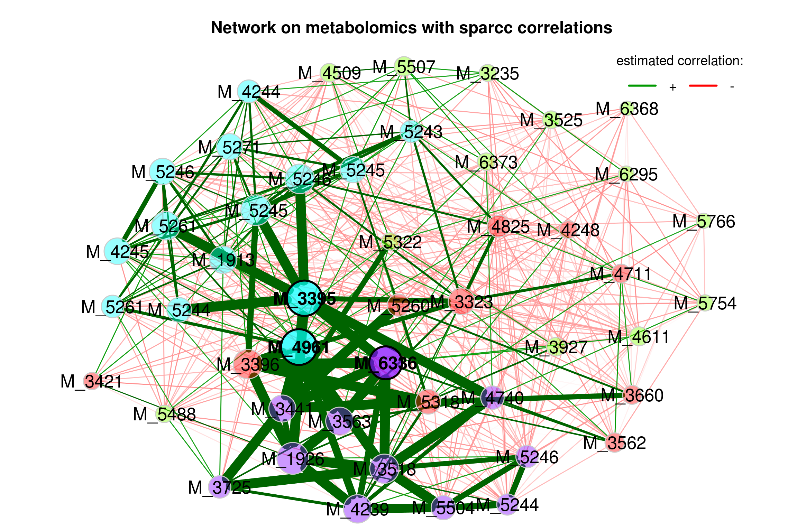
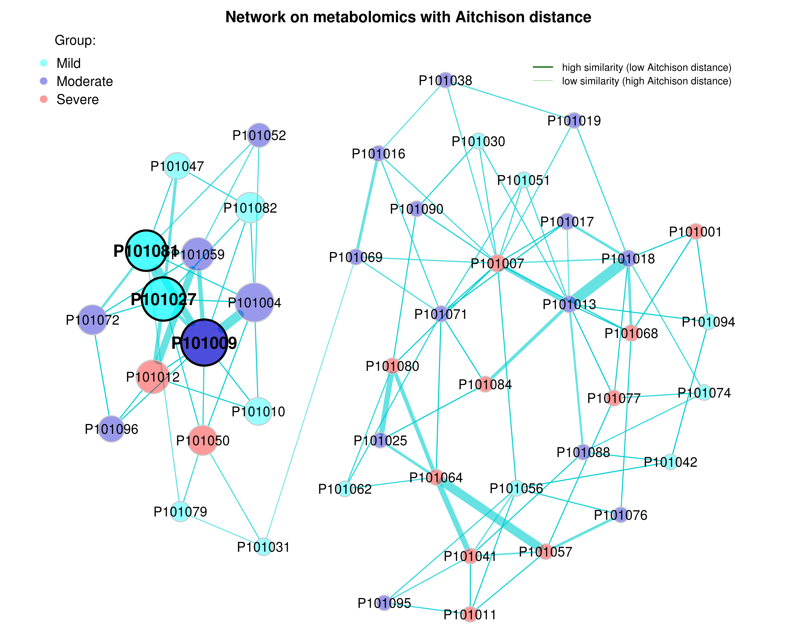
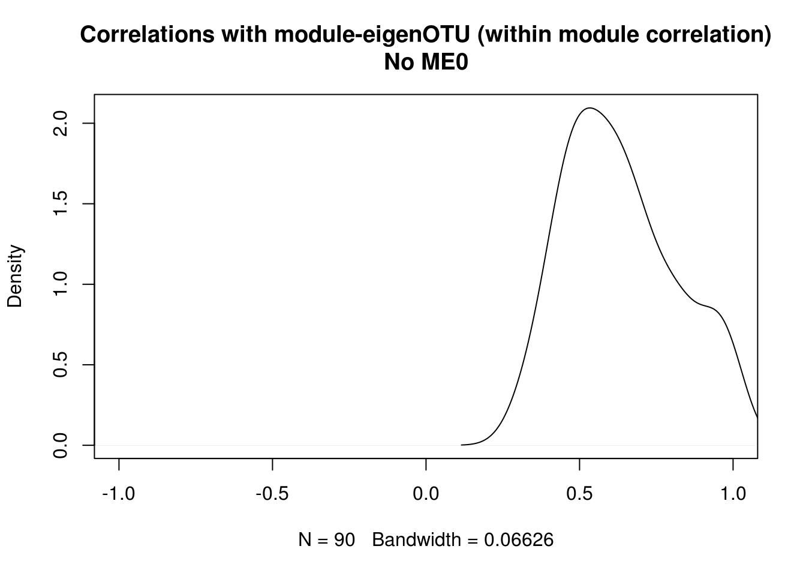
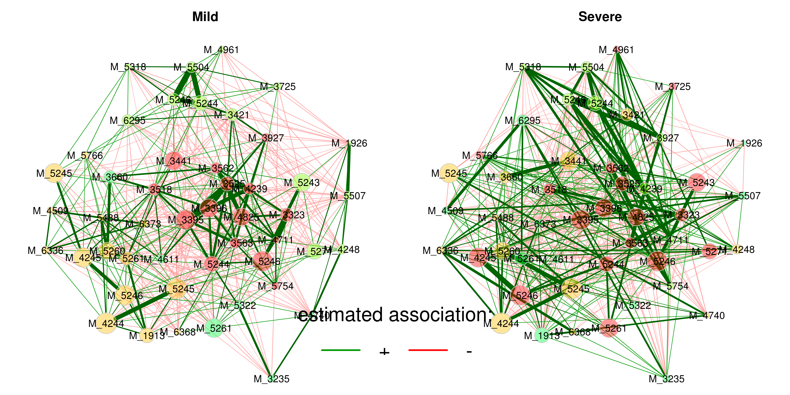

Chapter 2 利用WGCNA构建网络
library(tidyverse)
library(xlsx)
library(WGCNA)
library(igraph)
library(phyloseq)
library(DT)
options(stringsAsFactors = FALSE)2.1 16S 测序数据
2.1.1 输入数据格式
counts table
seq_tab <- readRDS("/share/projects/Analytics/analytics/MultiOmics/tools/WGCNA/test/SLE/data/dada2_res.rds")$seq_tab
# 将ASV替换为ASV1，ASV2，...
ASV_index <- data.frame(ASV=colnames(seq_tab))
ASV_index$index <- paste0("ASV",c(1:dim(ASV_index)[1]))
colnames(seq_tab) <- ASV_index$index
datatable(seq_tab[1:10, 1:10])taxa table
taxa_tb <- readRDS("/share/projects/Analytics/analytics/MultiOmics/tools/WGCNA/test/SLE/data/dada2_res.rds")$tax_tab
taxa_tb <- merge(ASV_index, taxa_tb, by.x = "ASV", by.y = 0)
taxa_tb <- taxa_tb[,-c(1)] # remove ASV column
taxa_tb <- taxa_tb %>% column_to_rownames("index")
datatable(taxa_tb[1:5, ])移除counts小于500的ASV
## [1] 45 231## [1] 231 72.1.2 构建network
设置参数
# Set seed as a precaution for reproducibility as some methods are non-deterministic.
set.seed(13118)
Run_analysis <- TRUE # if FALSE it tries to load data instead of running
save_plots <- TRUE
plot_labeling_size = 15
prefix <- "m"
save_TOM <- TRUE
pam_stage <- FALSE # Partitioning around medoids, tries to put more OTUs into modules where it is not directly clear from the dendrogram cutting.
set_verbose = 1 # How much detail from the WGCNA functions? Higher means more detail.
omics_type = "otu"
take_average <- F
max_block_size = 10000 # OTU data is small enough that this is not necessary.
tissue = "G" # G for gut, or L for liver
what_samples = "FW_and_SW" # FW, SW or FW_and_SW
applied_filter = 0.005 # filter lowest x percent of total sum, 100 is 100 percent.
parameter_sets <- list(set_1 = list(applied_norm = "TSS", applied_transf = "CLR", assoc_measure = "bicor"),
set_2 = list(applied_norm = "CSS", applied_transf = "log2", assoc_measure = "bicor"))
chosen_parameter_set <- parameter_sets$set_2
pcCorrection <- F
if(pcCorrection){
estimate_n.pc = F
if(!estimate_n.pc){
number_of_pcs_to_remove = 0 # Does not matter when pcCorrection is FALSE
}
}
save_name <- "16S_network_module"标准化
if(chosen_parameter_set$applied_norm == "TSS"){
# Normalize
seq_tab_filter <- apply(seq_tab_filter, MARGIN = 2, function(x){x/sum(x) * 100})
seq_tab_filter <- propr:::proprCLR(t(seq_tab_filter) + 1) # t(), samples as rows, variables as columns
seq_tab_filter <- t(seq_tab_filter)
}
if(chosen_parameter_set$applied_norm == "CSS"){
# Normalization and transformation in one
data.metagenomeSeq <- metagenomeSeq::newMRexperiment(seq_tab_filter) # Variables as rows, samples as columns
p <- metagenomeSeq::cumNormStat(data.metagenomeSeq)
data.cumnorm <- metagenomeSeq::cumNorm(data.metagenomeSeq, p=p)
seq_tab_filter <- metagenomeSeq::MRcounts(data.cumnorm, norm=TRUE, log=TRUE) # log here is a +1 shifted log2
}## Default value being used.## [1] "45 Samples" "231 OTUs"挑选power
powers <- c(1:10, seq(12,20,2))
suppressWarnings(sft <- pickSoftThreshold(seq_tab_filter,
powerVector = powers,
verbose = set_verbose,
networkType = "signed",
corFn= chosen_parameter_set$assoc_measure))## pickSoftThreshold: will use block size 231.
## pickSoftThreshold: calculating connectivity for given powers... ..0% ..100%
## Power SFT.R.sq slope truncated.R.sq mean.k. median.k. max.k.
## 1 1 0.6140 11.20 0.9500 118.000 119.0000 129.00
## 2 2 0.0977 1.59 0.8770 63.000 62.8000 76.10
## 3 3 0.1530 -1.20 0.7990 34.800 34.2000 46.90
## 4 4 0.2970 -1.44 0.8540 19.900 19.2000 30.00
## 5 5 0.2820 -1.17 0.8240 11.900 11.3000 19.70
## 6 6 0.3040 -1.02 0.9330 7.370 7.0000 13.70
## 7 7 0.3360 -1.00 0.9280 4.760 4.4200 9.77
## 8 8 0.4560 -1.09 0.8500 3.210 2.8400 7.18
## 9 9 0.5630 -1.07 0.7710 2.250 1.9100 5.49
## 10 10 0.7380 -1.33 0.8710 1.640 1.3400 4.85
## 11 12 0.1900 -3.14 -0.0251 0.977 0.6970 4.12
## 12 14 0.1970 -2.85 -0.0237 0.663 0.3710 3.73
## 13 16 0.2850 -4.10 0.1900 0.499 0.2150 3.50
## 14 18 0.2450 -4.12 0.0383 0.407 0.1220 3.36
## 15 20 0.2480 -3.81 0.0410 0.351 0.0795 3.26# Find the soft thresholding power beta to which co-expression similarity is raised to calculate adjacency.
# based on the criterion of approximate scale-free topology.
idx <- min(which((-sign(sft$fitIndices[,3])*sft$fitIndices[,2]) > 0.90))
if(is.infinite(idx)){
idx <- min(which((-sign(sft$fitIndices[,3])*sft$fitIndices[,2]) > 0.80))
if(!is.infinite(idx)){
st <- sft$fitIndices[idx,1]
} else{
idx <- which.max(-sign(sft$fitIndices[,3])*sft$fitIndices[,2])
st <- sft$fitIndices[idx,1]
}
} else{
st <- sft$fitIndices[idx,1]
}
# Plot Scale independence measure and Mean connectivity measure
# Scale-free topology fit index as a function of the soft-thresholding power
data.frame(Indices = sft$fitIndices[,1],
sfApprox = -sign(sft$fitIndices[,3])*sft$fitIndices[,2]) %>%
ggplot() +
geom_hline(yintercept = 0.9, color = "red", alpha = 0.6) + # corresponds to R^2 cut-off of 0.9
geom_hline(yintercept = 0.8, color = "red", alpha = 0.2) + # corresponds to R^2 cut-off of 0.8
geom_line(aes(x = Indices, y = sfApprox), color = "red", alpha = 0.1, size = 2.5) +
geom_text(mapping = aes(x = Indices, y = sfApprox, label = Indices), color = "red", size = 4) +
ggtitle("Scale independence") +
xlab("Soft Threshold (power)") +
ylab("SF Model Fit,signed R^2") +
xlim(1,20) +
ylim(-1,1) +
geom_segment(aes(x = st, y = 0.25, xend = st, yend = sfApprox[idx]-0.05),
arrow = arrow(length = unit(0.2,"cm")),
size = 0.5)-> scale_independence_plot
# Mean connectivity as a function of the soft-thresholding power
data.frame(Indices = sft$fitIndices[,1],
meanApprox = sft$fitIndices[,5]) %>%
ggplot() +
geom_line(aes(x = Indices, y = meanApprox), color = "red", alpha = 0.1, size = 2.5) +
geom_text(mapping = aes(x = Indices, y = meanApprox, label = Indices), color = "red", size = 4) +
xlab("Soft Threshold (power)") +
ylab("Mean Connectivity") +
geom_segment(aes(x = st-0.4,
y = sft$fitIndices$mean.k.[idx],
xend = 0,
yend = sft$fitIndices$mean.k.[idx]),
arrow = arrow(length = unit(0.2,"cm")),
size = 0.4) +
ggtitle(paste0("Mean connectivity: ",
round(sft$fitIndices$mean.k.[idx],2))) -> mean_connectivity_plot
cowplot::plot_grid(scale_independence_plot, mean_connectivity_plot, ncol = 2, align = "h", labels = c("A", "B"), label_size = plot_labeling_size) -> si_mc_plot
si_mc_plot
power
## [1] 10Block-wise network construction and module detection
The function blockwiseModules will first pre cluster with fast crude clustering method to cluster OTUs into blocks not exceeding the maximum, blocks may therefore not be fully optimal in the end.
Change the parameters here to better reflect your own data.
Run_analysis <- TRUE
if(Run_analysis){
modules.otu <- blockwiseModules(seq_tab_filter,
power = st,
networkType = "signed",
TOMType = "signed",
corType = chosen_parameter_set$assoc_measure,
maxPOutliers = 0.05,
deepSplit = 2,
pamStage = pam_stage,
pamRespectsDendro = TRUE,
mergeCutHeight = 0.25,
replaceMissingAdjacencies = TRUE,
minModuleSize = 5, # There are fewer otus than genes, and that many might not be connected
numericLabels = TRUE,
saveTOMs = save_TOM,
saveTOMFileBase = paste0("/share/projects/Analytics/analytics/MultiOmics/tools/Bookdown/result/", save_name),
verbose = set_verbose)
rownames(modules.otu$MEs) <- rownames(seq_tab_filter)
names(modules.otu$colors) <- colnames(seq_tab_filter)
names(modules.otu$unmergedColors) <- colnames(seq_tab_filter)
hubs <- chooseTopHubInEachModule(seq_tab_filter, modules.otu$colors)
}## Calculating module eigengenes block-wise from all genesVisualizing module characteristics
How many OTUs are there in each module?
table(modules.otu$colors) %>%
as.data.frame() %>%
dplyr::rename(Module = Var1, Size = Freq) %>%
dplyr::mutate(Module_color = labels2colors(as.numeric(as.character(Module)))) -> module_size
module_size %>%
ggplot(aes(x = Module, y = Size, fill = Module)) +
geom_col(color = "#000000") +
ggtitle("Number of OTUs in each module") +
theme(legend.position = "none") +
scale_fill_manual(values = setNames(module_size$Module_color,module_size$Module)) +
geom_text(aes(label = Size),vjust = 0.5, hjust = -0.18, size = 3.5) +
ylim(0, max(module_size$Size)*1.1) +
theme(plot.margin = margin(2, 2, 2, 2, "pt")) +
coord_flip()-> module_size_barplot
module_size_barplot
提取模块中的网络
plotEigengeneNetworks(modules.otu$MEs, "Eigengene adjacency heatmap",
marDendro = c(3,3,2,4),
marHeatmap = c(3,4,2,2), plotDendrograms = T,
xLabelsAngle = 90)
table(modules.otu$colors) %>% as.data.frame() -> res
res$`Module color` <- WGCNA::labels2colors(as.numeric(as.character(res$Var1)))
res <- res[, c(1,3,2)]
colnames(res) <- c("Module", "Module color", "Number of OTUs")
res %>% datatable()Dendrogram and module colors
# Plot the dendrogram and the module colors underneath for each block
for(i in seq_along(modules.otu$dendrograms)){
plotDendroAndColors(modules.otu$dendrograms[[i]], merged_colors[modules.otu$blockGenes[[i]]],
"Module colors",
dendroLabels = FALSE, hang = 0.03,
addGuide = TRUE, guideHang = 0.05,
main = paste0("Cluster Dendrogram\n",
"for block ",
i,": ",
length(modules.otu$blockGenes[[i]]),
" OTUs"))
}Module (Eigengene) correlation
MEs <- modules.otu$MEs
# Module correlation to other modules
MEs_R <- bicor(MEs, MEs, maxPOutliers = 0.05)
idx.r <- which(rownames(MEs_R) == "ME0")
idx.c <- which(colnames(MEs_R) == "ME0")
MEs_R_noME0 <- MEs_R[-idx.r, -idx.c]MEs_R[upper.tri(MEs_R_noME0)] %>%
as.data.frame() %>%
dplyr::rename("correlation" = ".") %>%
ggplot(aes(x=correlation)) +
geom_density() +
ggtitle(paste0(prefix,"ME correlation density\n without ",prefix ,"ME0")) -> MEs_R_density
pheatmap::pheatmap(MEs_R, color = colorRampPalette(c("Blue", "White", "Red"))(100),
silent = T,
breaks = seq(-1,1,length.out = 101),
treeheight_row = 5,
treeheight_col = 5,
main = paste0(prefix,"ME correlation heatmap"),
labels_row = paste0(prefix, rownames(MEs_R)),
labels_col = paste0(prefix, colnames(MEs_R))) -> MEs_R_Corr
cowplot::plot_grid(MEs_R_density, MEs_R_Corr$gtable, labels = c("D", "E"), label_size = plot_labeling_size, rel_widths = c(0.6, 1)) -> density_eigen
density_eigen
## [1] TRUE## [1] "45 samples" "231 OTUs"## [1] "231 OTUs" "6 modules"Show a plot of the intra modular correlation; How the OTUs within a module correlates to the module eigengene.
intra_cor <- c()
for (i in 1:ncol(seq_tab_filter)) {
m <- modules.otu$colors[i]
intra_cor[i] <- kME[i, paste0("ME", m)]
if(m != 0){
intra_cor[i] <- kME[i, paste0("ME", m)]
} else{
intra_cor[i] <- NA
}
}
idx <- which(is.na(intra_cor))
intra_cor <- intra_cor[-idx]
plot(density(intra_cor), main = "Correlations with module-eigenOTU (within module correlation)\nNo ME0", xlim = c(-1,1))
Show the same thing, but for each module individually, and color by module color.
# Corr within modules
corr_within_module <- function(seq_tab_filter, modules, module_x = 1){
idx.omics_data <- which(modules$colors == module_x)
idx.me <- which(colnames(modules$MEs) == paste0("ME",module_x))
kME_x <- bicor(seq_tab_filter[,idx.omics_data], modules$MEs[,idx.me], maxPOutliers = 0.05)
kME_x
}
ggplot.list <- list()
for(m in colnames(modules.otu$MEs)){
h <- as.numeric(sub("ME","", m))
data.frame(x = suppressWarnings(corr_within_module(seq_tab_filter = seq_tab_filter, modules = modules.otu, module_x = h))) %>%
ggplot() +
geom_density(aes(x = x), fill = labels2colors(h), color = "black", alpha = 0.5) +
xlim(-1, 1) +
xlab("OTU correlation")+
ggtitle(paste0(prefix,m)) -> da_plot
ggplot.list[[m]] <- da_plot
}
ggplot.list <- ggplot.list[ggplot.list %>% names() %>% sub("ME", "", .) %>% as.numeric() %>% order()]
Combine to one plot
cowplot::plot_grid(si_mc_plot , density_eigen, ncol = 1, rel_heights = c(0.8,1)) -> part_1
cowplot::plot_grid(part_1, module_size_barplot, labels = c("", "C"), label_size = plot_labeling_size, rel_widths = c(1,0.5)) -> part_2
cowplot::plot_grid(part_2, density_all_plot, ncol = 1, rel_heights = c(0.8,1), labels = c("", "F"), label_size = plot_labeling_size)
Hub genes
For each module it is possible to pick a hub gene with the function chooseTopHubInEachModule.
hubs %>%
as.data.frame() %>%
dplyr::rename("OTU_name" = ".") %>%
tibble::rownames_to_column(var = "Module") -> hubOTUs
dplyr::left_join(hubOTUs,
(taxa_tb %>%
tibble::rownames_to_column(var = "OTU_name")),
by = "OTU_name") -> hubOTUs
hubOTUs## Module OTU_name Kingdom Phylum Class Order Family Genus Species
## 1 0 ASV75 Bacteria Bacteroidetes Bacteroidia Bacteroidales Bacteroidaceae Bacteroides <NA>
## 2 1 ASV20 Bacteria Firmicutes Clostridia Clostridiales Lachnospiraceae Dorea longicatena
## 3 2 ASV248 Bacteria Firmicutes Clostridia Clostridiales Lachnospiraceae Blautia <NA>
## 4 3 ASV222 Bacteria Firmicutes Clostridia Clostridiales Peptostreptococcaceae <NA> <NA>
## 5 4 ASV237 Bacteria Bacteroidetes Bacteroidia Bacteroidales Bacteroidaceae Bacteroides <NA>
## 6 5 ASV214 Bacteria Firmicutes Erysipelotrichia Erysipelotrichales Erysipelotrichaceae Holdemanella <NA>res <- hubOTUs[, c(1,2,4,7)]
colnames(res) <- c("Module", "OTU", "Phylum","Genus")
res %>% datatable()可视化网络图
load(file = "/share/projects/Analytics/analytics/MultiOmics/tools/Bookdown/result/16S_network_module-block.1.RData")
# The TOM is saved as a dist object and needs to be converted to a matrix
TOM <- as.matrix(TOM)
# Add OTU names to the TOM matrix. It is symmetrical so rownames = colnames
rownames(TOM) <- colnames(TOM) <- names(modules.otu$colors)Which taxonomic level should the graph be colored with in addition to modules?
Convert module labels and taxonomy to hex colors
taxonomy_info <-
taxa_tb %>%
rownames_to_column(var = "OTU_name") %>%
dplyr::select("OTU_name", selected_taxa) %>%
mutate_all(.funs = list(as.character)) ## Note: Using an external vector in selections is ambiguous.
## ℹ Use `all_of(selected_taxa)` instead of `selected_taxa` to silence this message.
## ℹ See <https://tidyselect.r-lib.org/reference/faq-external-vector.html>.
## This message is displayed once per session.module_info <-
modules.otu$colors %>%
as.data.frame() %>%
rownames_to_column(var = "OTU_name") %>%
dplyr::rename(Module = ".")
# 选择指定模块
TOM <- TOM[module_info$OTU_name, module_info$OTU_name]
graph_info <- left_join(module_info, taxonomy_info, by = "OTU_name")
# Converts R-colors to hex colors
color2hex <- function(x){
x <- col2rgb(x)
rgb(x[1,], x[2,], x[3,], maxColorValue = 255)
}
# Add specific colors to the taxa
taxa_colors <-
graph_info %>%
dplyr::select(selected_taxa) %>%
unique() %>%
mutate(tax_color = colorRampPalette(RColorBrewer::brewer.pal(8, "Accent"))(nrow(.)))
graph_info_colors <-
left_join(graph_info, taxa_colors) %>%
mutate(module_color = WGCNA::labels2colors(Module)) %>%
mutate(module_color = color2hex(module_color)) %>%
mutate(module_color = paste0(module_color,70))## Joining, by = "Phylum"If all lines are too thick, reduce the strength (between 0 and 1). The lower the number the weaker the lines.
g <- graph.adjacency(TOM, mode="undirected", weighted= TRUE)
#~https://stackoverflow.com/questions/28366329/how-to-scale-edge-colors-igraph
igraph::delete.edges(g, which(E(g)$weight <1))## IGRAPH 685677b UNW- 231 0 --
## + attr: name (v/c), weight (e/n)
## + edges from 685677b (vertex names):E(g)$width <- E(g)$weight*strength_adjust + min(E(g)$weight)
set.seed(231) # Ensures the same layout given the same data.
l <- layout_with_fr(g, weights = E(g)$weight)
# Order graph_info_colors by the graph
graph_info_colors <- graph_info_colors[which(graph_info_colors$OTU_name %in% V(g)$name),]
# Ensure that the names are in the same order
if(all(V(g)$name == graph_info_colors$OTU_name)){cat("\nOTU names match")}##
## OTU names match# Add square shapes to hub OTUs
V(g)$shape <- ifelse(V(g)$name %in% hubs[-1], "square", "circle") #-1 means dont use module 0
# OTUs in modules have larger nodes
V(g)$size <- ifelse(graph_info_colors$Module != 0, 10, 5)
# And larger text
V(g)$label.cex <- ifelse(graph_info_colors$Module != 0, 0.8, 0.4)
# Remove everything but the number to increase readability
V(g)$name = sub("OTU_", "", graph_info_colors$OTU_name)Find distinct entires for the plot legends
module_labels <-
graph_info_colors %>%
dplyr::select(Module, module_color) %>%
distinct() %>%
arrange(Module)
tax_labels <-
graph_info_colors %>%
dplyr::select(selected_taxa, tax_color) %>%
distinct()Plot the graphs, leftmost is colored by module, rightmost is colored by taxonomic classification
par(mfrow = c(1,2))
par(mar = c(0,0,0,0))
plot(g, layout = l, vertex.color = graph_info_colors$module_color)
# legend("topleft", legend = paste0("mM", 0:(nrow(module_labels)-1)), fill=module_labels$module_color)
legend("topleft", legend = paste0("mM", 0:(nrow(module_labels)-1)), fill=module_labels$module_color)
plot(g, layout = l, vertex.color = graph_info_colors$tax_color)
legend("topleft", legend = tax_labels %>% .[,1], fill=tax_labels$tax_color)2.2 宏基因组测序数据
species level table
mgs <- read.table("/share/projects/Analytics/analytics/MultiOmics/tools/HAllA/GvHD/metagenomics.txt", header = TRUE, sep = "\t") # read metagenomic species level datataxa table
mgs_profile <- read.table("/share/projects/Analytics/analytics/MultiOmics/tools/HAllA/GvHD/metaphlan2_merged.tsv", header = TRUE, sep = "\t") # read metagenomic hirerachy table，only need ID column
mgs_species <- mgs_profile %>%
.[sapply(str_split(mgs_profile$ID, "\\|"), function(x) length(x) == 7), ]
taxa_table <- str_split_fixed(mgs_species$ID,"\\|", 7) %>% as.data.frame()
colnames(taxa_table) <- c("Kingdom", "Phylum", "Class", "Order", "Family", "Genus", "Species")
rownames(taxa_table) <- str_replace(taxa_table$Species, "s__", "")后续标准化及构建network处理与16S数据相同
2.3 代谢数据
代谢数据
metabolites_data <- read.table("/share/projects/Analytics/analytics/MultiOmics/tools/HAllA/GvHD/metabolic.txt", header = TRUE, sep = "\t") # read metabolic data代谢层级关系
metabolites_level <- read.xlsx("/share/projects/Analytics/analytics/MultiOmics/tools/HAllA/GvHD/ALL_sample_data.xlsx", sheetIndex = 1) # read metabolic hirerachy table
metabolites_level <- metabolites_level %>% select(Index, Class.I, Class.II)
metabolites_level <- metabolites_level %>% column_to_rownames("Index")后续标准化及构建network处理与16S数据相同